Singles Discography


My Name Is (Rock Star Remix) †
Eminem
Produced by Stretch Armstrong
Non-album
May 17, 1999
US - | UK -
ⓘ
Released for free exclusively on eminem.com.
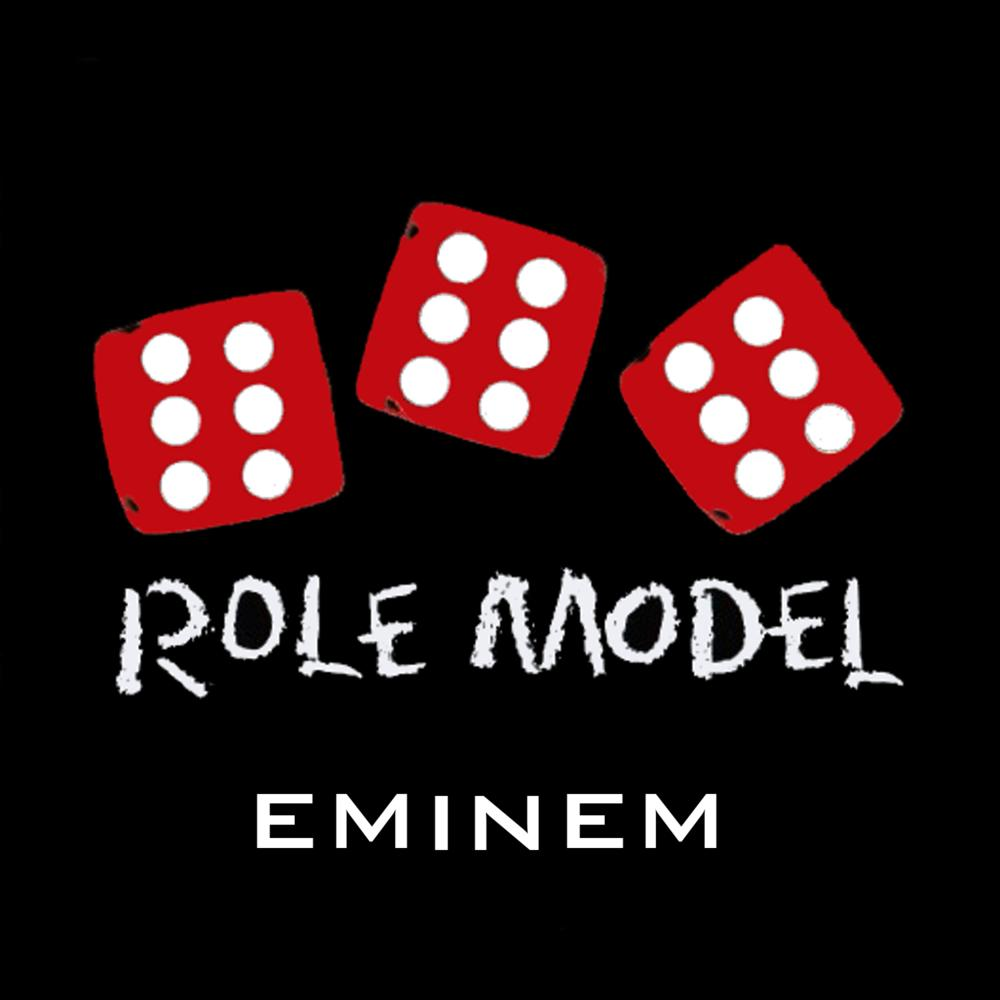

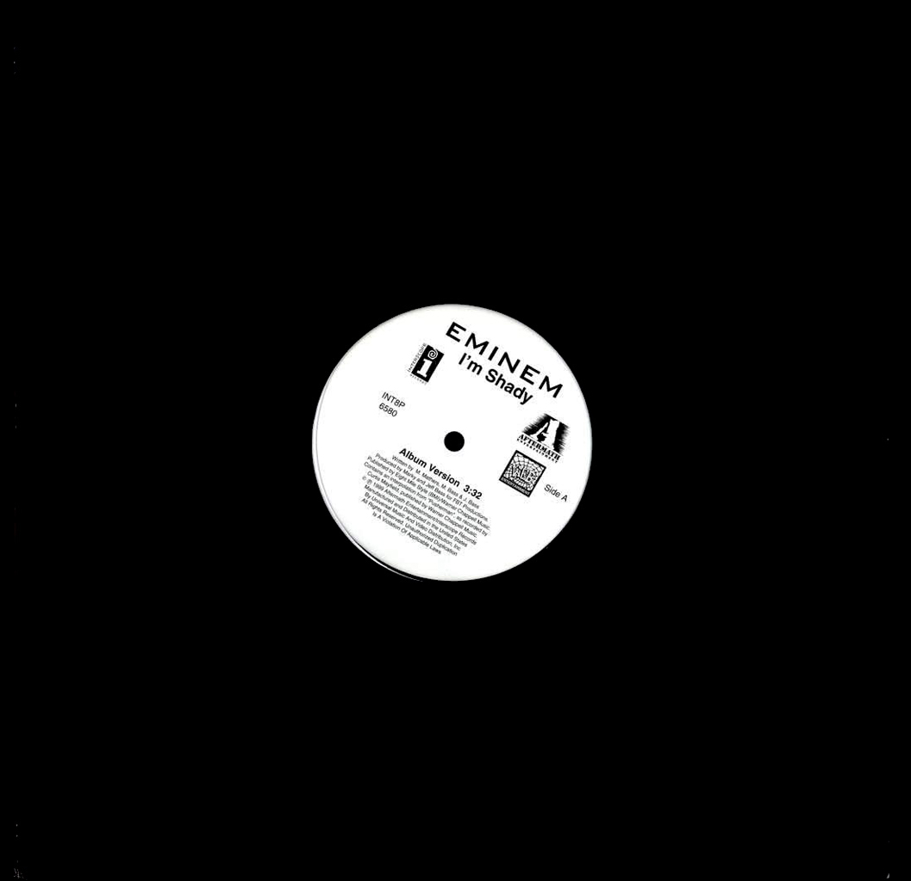
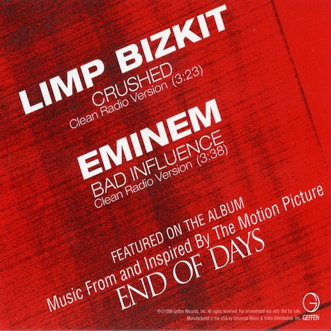
Bad Influence †
Eminem
Produced by Mark & Jeff Bass
End Of Days (Soundtrack)
November 2, 1999
US - | UK -
ⓘ
Issued as a split promotional single with Limp Bizkit’s “Crushed”.


Three Verses †
Eminem
Produced by N/A
Non-album
1999
US - | UK -
ⓘ
Released for free exclusively on eminem.com.

Pick It Up (Live) †
Eminem
Produced by N/A
Non-album
1999
US - | UK -
ⓘ
Released for free exclusively on eminem.com.

Just Rhymin’ With Proof †
Eminem feat. Proof
Produced by N/A
Non-album
1999
US - | UK -
ⓘ
Released for free exclusively on eminem.com.

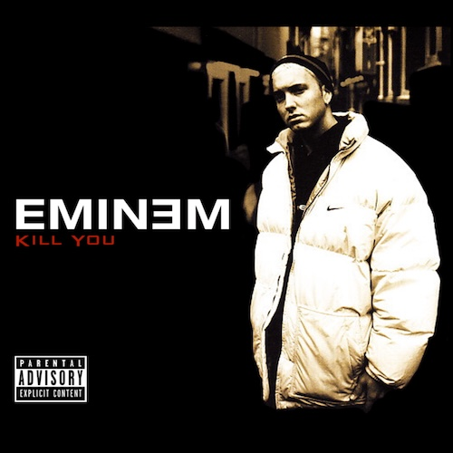

Bitch Please II †
Eminem feat. Dr. Dre, Snoop Dogg, Xzibit & Nate Dogg
Produced by Dr. Dre
The Marshall Mathers LP
July 11, 2000


Stan
Eminem feat. Dido
Produced by The 45 King
Additional Production by Eminem
The Marshall Mathers LP
November 20, 2000

Shit On You
D12
Produced by DJ Head
Additional Production by Eminem
Devil’s Night (Special Edition)
December 5, 2000
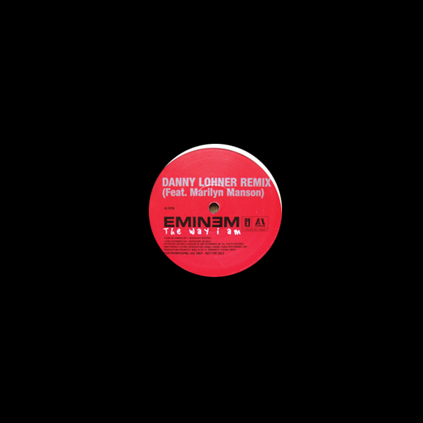
The Way I Am (Danny Lohner Remix) †
Eminem feat. Marilyn Manson
Produced by Eminem
The Marshall Mathers LP (Tour Edition)
2001
US - | UK -
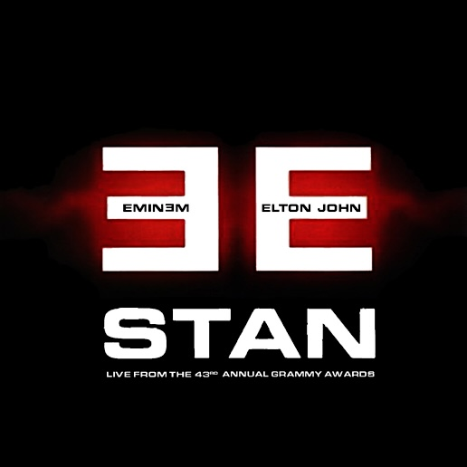
Stan (Live At 43rd Grammy Awards) †
Eminem feat. Elton John
Produced by The Recording Academy
Curtain Call: The Hits
February 22, 2001
US - | UK -
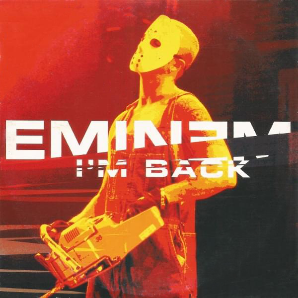


Purple Pills
D12
Produced by Eminem
Additional Production by Jeff Bass
Devil’s Night
June 5, 2001
ⓘ
“Purple Hills,” the clean version of “Purple Pills,” was released simultaneously with the original explicit version.

Pistol Pistol †
D12
Produced by Eminem
Additional Production by Denaun Porter
Devil’s Night
June 2001
US - | UK -
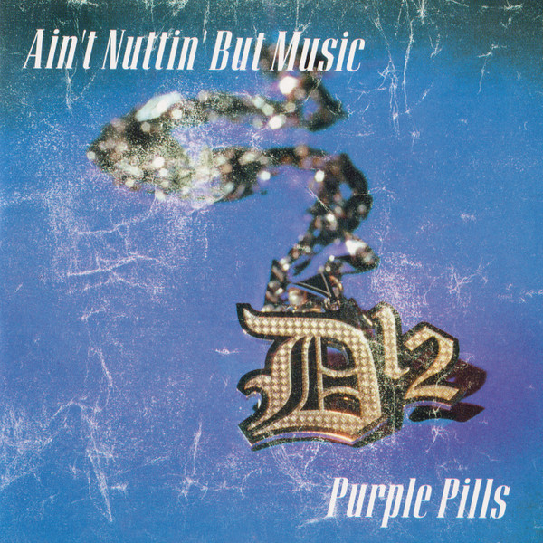

Blow My Buzz †
D12
Produced by Eminem
CO-Produced by Jeff Bass
Devil’s Night
November 6, 2001
US - | UK -

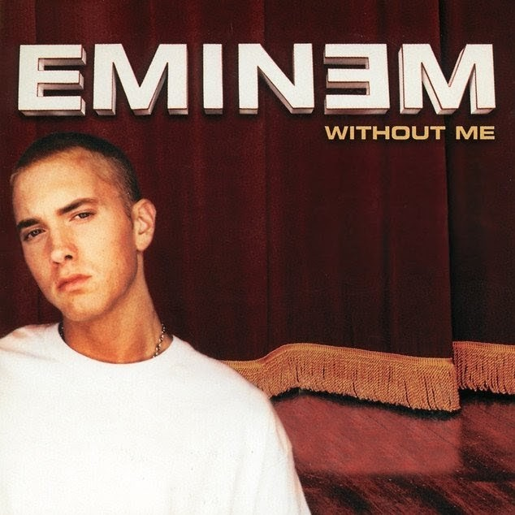
Without Me
Eminem
Produced by Eminem
Co-Produced by Jeff Bass
Additional Production by DJ Head
The Eminem Show
May 13, 2002


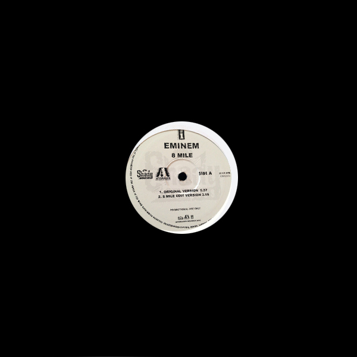

Superman
Eminem feat. Dina Rae
Produced by Eminem
Additional Production by Jeff Bass
The Eminem Show
January 21, 2003
ⓘ
Radio single; no retail single was released.

Sing For The Moment
Eminem
Produced by Eminem
Co-Produced by Jeff Bass
The Eminem Show
February 25, 2003

Hail Mary †
Eminem, 50 Cent & Busta Rhymes
Produced by N/A
Invasion Part II: Conspiracy Theory
May 10, 2003


6 In The Morning †
D12
Produced by Eminem
Additional Production by Luis Resto
D12 World
January 2004
US - | UK -


American Psycho II †
D12 feat. B-Real
Produced by Dr. Dre & Mike Elizondo
D12 World
April 2004
US - | UK -


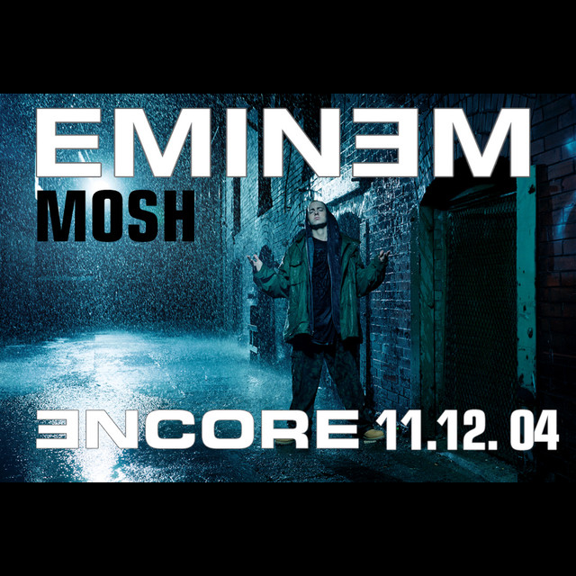

Encore
Eminem feat. Dr. Dre & 50 Cent
Produced by Dr. Dre & Mark Batson
Encore
November 9, 2004
ⓘ
“Encore” was released as a vinyl-exclusive retail single. Because the records were labeled as promotional copies, the release is often mistakenly categorized as a promotional single, despite selling enough copies to reach No. 13 on Billboard’s Hot R&B/Hip-Hop Singles Sales chart and No. 33 on the UK Hip-Hop & R&B Singles Chart, which at the time functioned as a physical-sales-only chart.

Like Toy Soldiers
Eminem
Produced by Eminem
Additional Production by Luis Resto
Encore
March 15, 2005


When I’m Gone
Eminem
Produced by Eminem
Additional Production by Luis Resto
Curtain Call: The Hits
December 6, 2005

Shake That
Eminem feat. Nate Dogg
Produced by Eminem
Additional Production by Luis Resto
Curtain Call: The Hits
January 17, 2006

You Don’t Know
Eminem, 50 Cent, Ca$his & Lloyd Banks
Produced by Eminem
Additional Production by Luis Resto
Eminem Presents: The Re-Up
November 7, 2006

Jimmy Crack Corn †
Eminem & 50 Cent
Produced by Eminem
Additional Production by Luis Resto
Eminem Presents: The Re-Up
December 19, 2006

Jimmy Crack Corn (Vocal Remix)
Eminem feat. Ca$his
Produced by Eminem
Additional Production by Luis Resto
Non-album
March 6, 2007
US - | UK -


We Made You
Eminem
Produced by Dr. Dre & Eminem
Additional Production by Doc Ish
Relapse
April 7, 2009
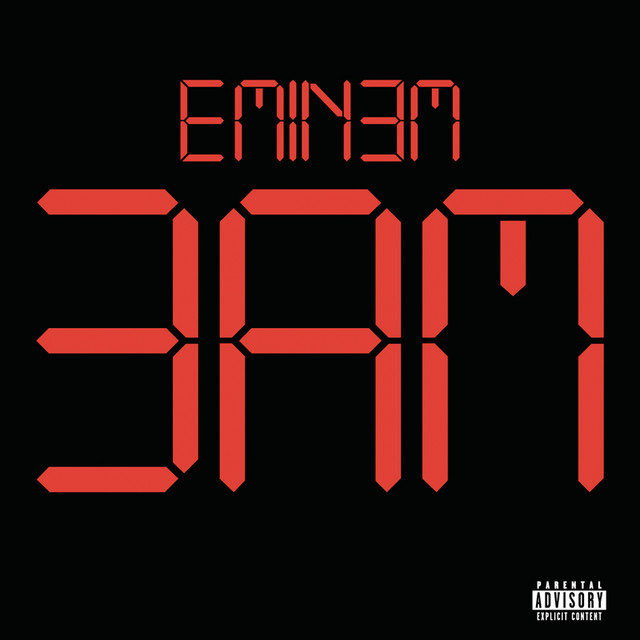

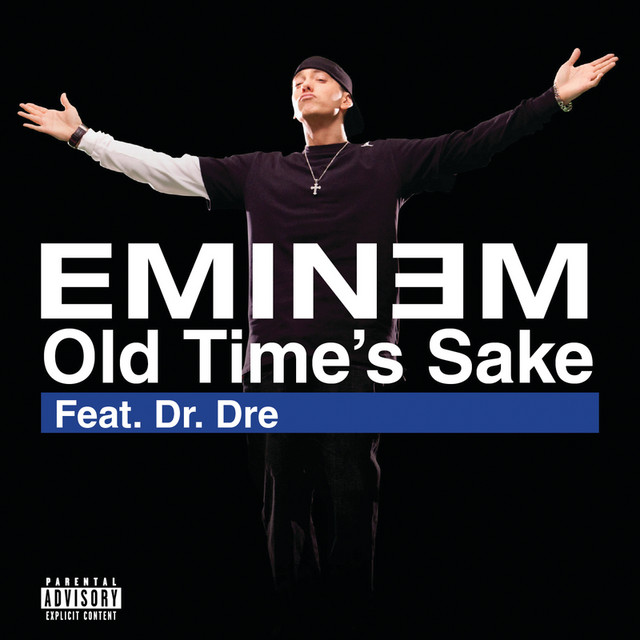


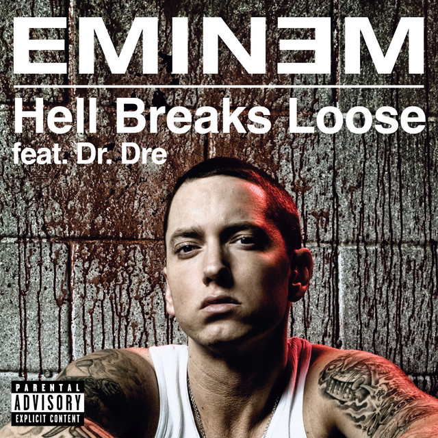
Hell Breaks Loose
Eminem feat. Dr. Dre
Produced by Dr. Dre & Mark Batson
Relapse: Refill
December 15, 2009
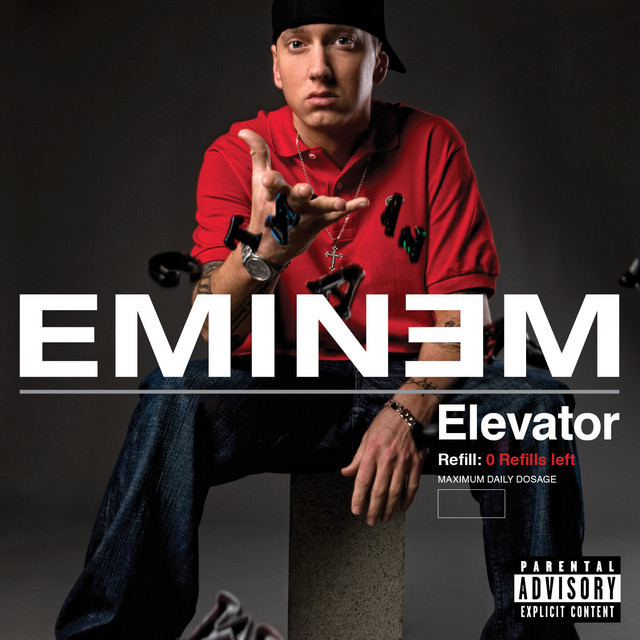
Elevator
Eminem
Produced by Eminem
Additional production by Luis Resto
Relapse: Refill
December 15, 2009

Not Afraid
Eminem
Produced by Boi-1da
Additional Production by Eminem, Jordan Evans & Matthew Burnett
Recovery
April 27, 2010

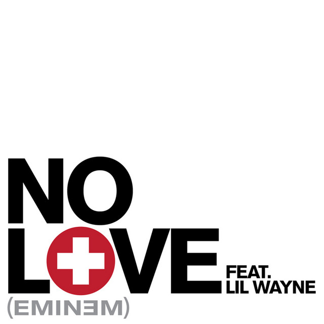
Fast Lane
Bad Meets Evil
Produced by Supa Dups
Additional production by Eminem & Jason Gilbert
Hell: The Sequel
May 3, 2011
Space Bound
Eminem
Produced by Jim Jonsin
Recovery
June 18, 2011
ⓘ
Radio single; no retail single was released.
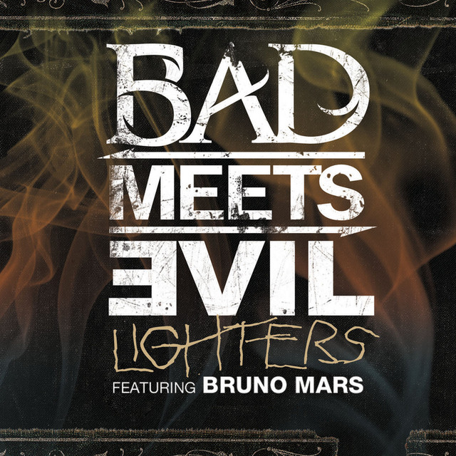
Lighters
Bad Meets Evil feat. Bruno Mars
Produced by Eminem, The Smeezingtons & Battle Roy
Hell: The Sequel
July 5, 2011
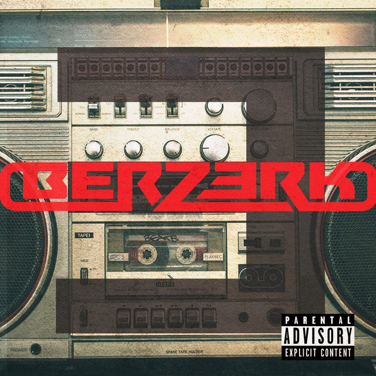
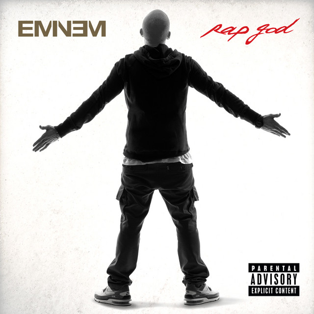
The Monster
Eminem feat. Rihanna
Produced by Frequency
Co-Produced by Aalias
The Marshall Mathers LP 2
October 28, 2013
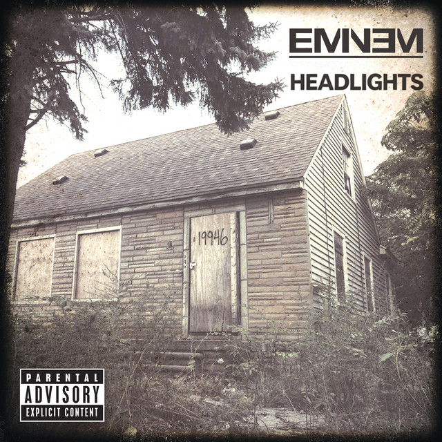
Headlights
Eminem feat. Nate Ruess
Produced by Emile Haynie & Jeff Bhasker
Additional Production by Eminem
The Marshall Mathers LP 2
February 5, 2014
ⓘ
Radio single; no retail single was released.

Guts Over Fear
Eminem feat. Sia
Produced by Emile Haynie & John Hill
Co-Produced by Eminem
Shady XV
August 25, 2014

Detroit vs. Everybody
Eminem, Royce Da 5’9“ , Big Sean, Danny Brown, Dej Loaf & Trick Trick
Produced by Eminem & Statik Selektah
Shady XV
November 11, 2014


Kings Never Die
Eminem feat. Gwen Stefani
Produced by DJ Khalil
Additional Production by Eminem
July 10, 2015


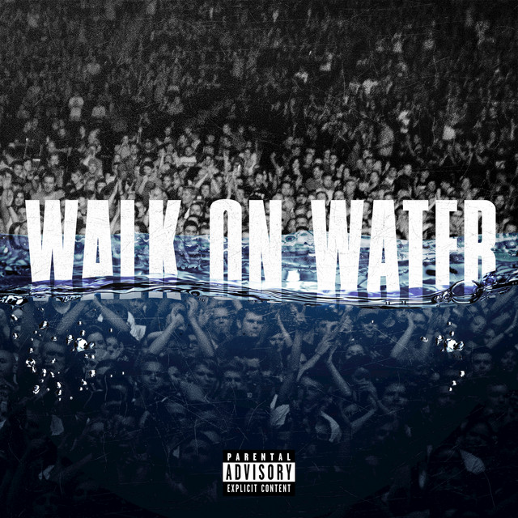
Walk On Water
Eminem feat. Beyoncé
Produced by Rick Rubin
Co-Produced by Skylar Grey
Revival
November 10, 2017
Untouchable †
Eminem
Produced by Eminem, Mark Batson, Emile Haynie & Mr. Porter
Revival
December 8, 2017
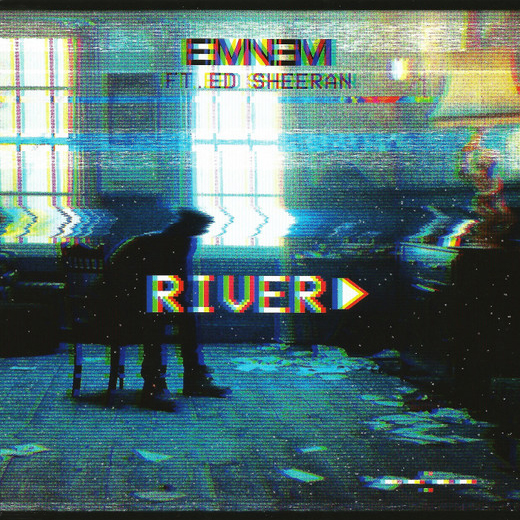
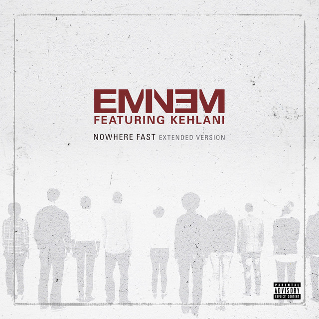
Nowhere Fast
Eminem
Produced by Rock Mafia & Hit-Boy
Revival
March 17, 2018
ⓘ
The single includes an extra verse not included on the album.


Chloraseptic (Remix)
Eminem feat. 2 Chainz & Phresher
Produced by Mr. Porter
Non-album
January 8, 2018
US - | UK -
Fall
Eminem
Produced by Mike WiLL Made-It
Additional Production by Eminem
Kamikaze
September 4, 2018
ⓘ
Radio single; no retail single was released.


Lucky You †
Eminem feat. Joyner Lucas
Produced by Boi-1da & Jahaan Sweet
Additional Production by Eminem
Kamikaze
November 30, 2018 (UK only)
Darkness
Eminem
Produced by Royce Da 5’9” & Eminem
Music To Be Murdered By
January 17, 2020
ⓘ
Promoted as a lead single through video and limited radio play; no retail single was released.

Godzilla
Eminem feat. Juice WRLD
Produced by d.a. got that dope
Additional Production by Eminem
Music To Be Murdered By
January 31, 2020
ⓘ
Radio single; no retail single was released at time of launch. Later released as a 7-inch single in 2025; exclusive to eminem.com.

Killer (Remix)
Eminem feat. Jack Harlow & Cordae
Produced by d.a. got that dope
Non-album
May 28, 2021

The King And I
Eminem feat. CeeLo Green
Produced by Dr. Dre &Eminem
Elvis (Soundtrack)
June 16, 2022
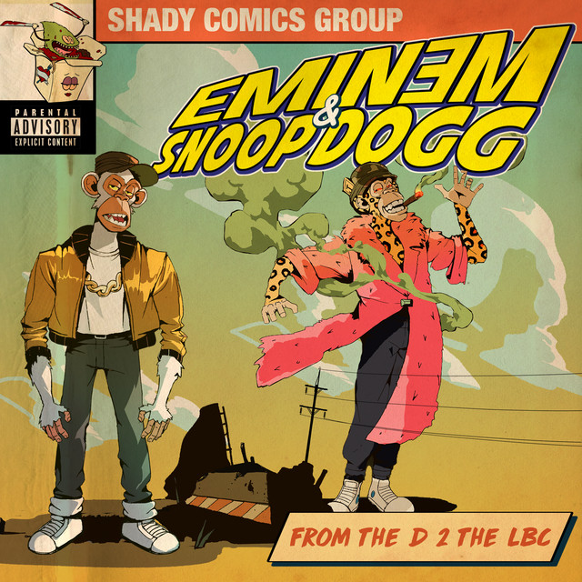
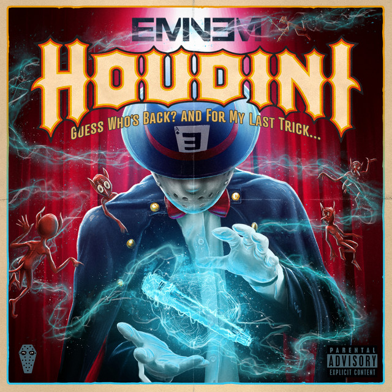
Houdini
Eminem
Produced by Eminem
Additional Production by Luis Resto
The Death Of Slim Shady (Coup De Grâce)
May 31, 2024
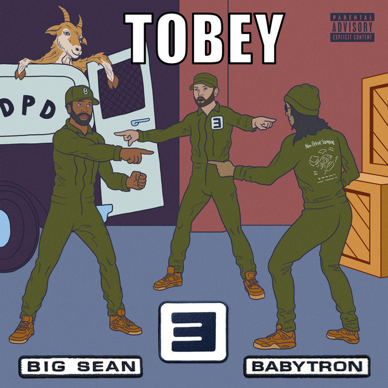
Tobey
Eminem feat. BabyTron & Big Sean
Produced by Daniyel, Cole Bennett, John Nocito, Car!ton & Marvy Ayy
Additional Production by Eminem
The Death Of Slim Shady (Coup De Grâce)
July 2, 2024

Somebody Save Me
Eminem feat. Jelly Roll
Produced by Benny Blanco & Emile Haynie
Additional Production by Eminem
The Death Of Slim Shady (Coup De Grâce)
July 19, 2024
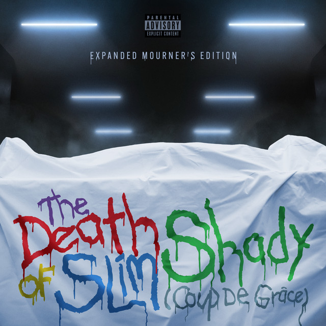
Fuel (Shady Edition) †
Eminem feat. Westside Boogie & Grip
Produced by Mr. Porter
The Death Of Slim Shady (Coup De Grâce) [Expanded Mourner’s Edition]
September 11, 2024
US - | UK -
ⓘ
Streaming single; exclusive to Spotify.
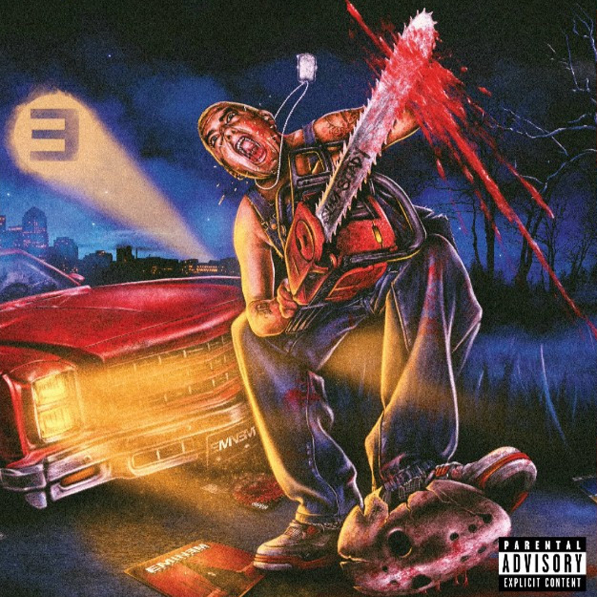
Fuel
Eminem
Produced by Mr. Porter
The Death Of Slim Shady (Coup De Grâce)
May 22, 2025
ⓘ
7-inch single; exclusive to Interscope.com.